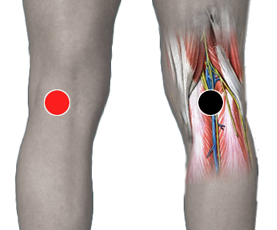

Neumonía
Pares
popliteo - popliteo
dorsal 12 - dorsal 12
mediastino - pericardio
pecho - pecho

Generalidades:
El Neumococo (Streptococcus pneumoniae) es muy agresivo; pasa a la cavidad pélvica al pulmón dando Neumonía o Pulmonía fulminante Se manifiesta primero en el tubo digestivo. Si llega al sistema nervioso puede causar Meningitis. Presente en ancianos desnutridos con extirpación de bazo, niños con sobrepeso o bajo peso. Impactar par Bazo y checar par Húmero.
Transmisión
Dado que es una bacteria presente en vías respiratorias, ataca principalmente a niños, ancianos y personas inmunodeprimidas.